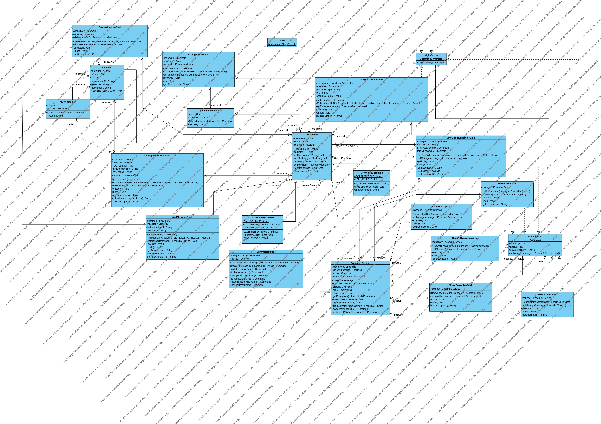

The Music Ensembles Management System (MEMS) is design using object-oriented principles with several design patterns to make code more flexible and maintainable.

This section discuss and explain each of the design patterns applied to this Music Ensembles Management System.
Command Pattern is behavioral design pattern that encapsulate a request as an object. This pattern turn operations into stand-alone objects that contain all information about the operation.
Command Interface:
public interface Command {
void execute();
void undo();
String getDescription();
void setManager(EnsembleService manager);
}
The system implement 11 concrete command classes:
MakeEnsembleCmd, AddMusicianCmd, DeleteMusicianCmd, ChangeInstrumentCmd, ChangeNameCmdSetCurrentEnsembleCmd, ShowEnsembleCmd, ShowAllEnsemblesCmd, ShowHistoryCmdUndoCommand, RedoCommandSome commands also implement EnsembleCommand interface which extend Command and add getEnsemble() method.
Invoker (EnsembleService):
public class EnsembleService {
private final Stack<Command> history;
private final Stack<Command> undoneCommands;
public void execute(Command command) {
undoneCommands.clear();
command.execute();
history.push(command);
}
}
EnsembleService maintain two stacks for undo/redo functionality.
This design allow modification commands to be undone while query commands don't affect undo/redo history.
Factory Pattern is creational design pattern that provide interface for creating objects without specify their exact classes.
CommandParser Factory:
public class CommandParser {
private final EnsembleService manager;
private final Scanner scanner;
public Command createCommand(String commandCode) {
switch (commandCode) {
case "c": return makeEnsembleCmd();
case "a": return addMusicianCmd();
case "m": return changeInstrumentCmd();
case "d": return deleteMusicianCmd();
// ... other cases
default: return null;
}
}
}
Factory have helper methods to create complex commands and collect user input. This is simple factory pattern implementation where factory handle both object creation and user input collection.
Benefits:
Limitations:
Memento Pattern is behavioral design pattern that let you save and restore previous state of an object without reveal implementation details.
Memento Classes:
public class MusicianState {
private final int role;
private final Musician musician;
public MusicianState(Musician musician) {
this.musician = musician;
this.role = musician.getRole();
}
public void restore() {
musician.setRole(role);
}
}
public class EnsembleState {
private final String name;
private final Ensemble ensemble;
public EnsembleState(Ensemble ensemble) {
this.ensemble = ensemble;
this.name = ensemble.getName();
}
public void restore() {
ensemble.setName(name);
}
}
Usage in Commands:
public class ChangeInstrumentCmd implements EnsembleCommand {
private MusicianState memento;
public void execute() {
memento = new MusicianState(musician); // save state
musician.setRole(newInstrument); // change state
}
public void undo() {
memento.restore(); // restore old state
}
}
The three patterns work together in this workflow:
For Modification Commands (create, add, delete, change):
User Input → Factory create Command → Command save state with Memento (if needed)
→ Main call manager.execute(command)
→ Command execute and store in history stack
→ User type "u" → Undo pop command from history
→ Command use Memento to restore old state (for change operations)
For Query Commands (show ensemble, show all, list history):
User Input → Factory create Command → Main call command.execute() directly
→ Command execute (no history storage)
→ Command undo() is empty (no-op)
For Control Commands (undo, redo):
User Input "u" or "r" → Factory create UndoCommand or RedoCommand
→ Main call command.execute() directly
→ Command manipulate history stacks in EnsembleService
Summary:
| Pattern | Role | Key Classes |
|---|---|---|
| Command | Encapsulate operations, enable undo/redo for modification commands | Command interface, EnsembleCommand interface, 11 concrete commands, EnsembleService |
| Factory | Create command objects and collect user input | CommandParser |
| Memento | Save and restore state for change operations | MusicianState, EnsembleState |
Key Points:
These three design patterns was applied according to assignment requirements. They solve specific problems: Factory solve object creation, Command solve undo/redo for modifications, Memento solve state preservation for change operations.
This document contains test cases covering all system commands including create, modify, delete, query operations, and Undo/Redo functionality.
Input:
c
o
E001
Vienna Orchestra
Expected Output:
Orchestra ensemble is created.
Current ensemble is changed to E001.
Explanation: Create an orchestra ensemble with ID E001 and name Vienna Orchestra
Screenshot:
Input:
c
j
J001
Blue Note Band
Expected Output:
Jazz band ensemble is created.
Current ensemble is changed to J001.
Explanation: Create a jazz band ensemble with ID J001 and name Blue Note Band
Screenshot: 
Input:
sa
Expected Output:
orchestra ensemble Vienna Orchestra (E001)
jazz band ensemble Blue Note Band (J001)
Explanation: List all ensembles in the system
Screenshot: 
Input:
s
E001
Expected Output:
Changed current ensemble to E001.
Explanation: Switch current working ensemble to E001
Screenshot: 
Precondition: Current ensemble is E001 (Orchestra)
Input:
a
M001, John Smith
1
Expected Output:
Musician is added.
Explanation: Add violinist John Smith (ID: M001) to orchestra, role code 1 represents violinist
Screenshot: 
Precondition: Current ensemble is J001 (Jazz Band)
Input:
s
J001
a
M002, Mary Johnson
1
Expected Output:
Changed current ensemble to J001.
Musician is added.
Explanation: Add saxophonist Mary Johnson (ID: M002) to jazz band, role code 1 represents pianist
Screenshot: 
Precondition: Current ensemble has musicians
Input:
se
Expected Output:
Jazz Band Ensemble Blue Note Band (J001)
Pianist:
M002, Mary Johnson
Saxophonist:
NIL
Drummer:
NIL
Explanation: Display current ensemble details including all musicians and their roles
Screenshot: 
Precondition: Current ensemble is J001, has musician M002
Input:
m
M002
2
Expected Output:
instrument is updated.
Explanation: Change musician M002's instrument from pianist to saxophonist (role code 2)
Screenshot: 
Precondition: Current ensemble is J001
Input:
cn
Blue Note Jazz Ensemble
Expected Output:
Ensemble's name is updated.
Explanation: Change ensemble J001's name from "Blue Note Band" to "Blue Note Jazz Ensemble"
Screenshot: 
Precondition: Current ensemble has musician M002
Input:
d
M002
Expected Output:
Musician is deleted.
Explanation: Delete musician with ID M002 from current ensemble
Screenshot: 
Input:
l
Expected Output:
Undo List
Create orchestra ensemble, E001, Vienna Orchestra
Create jazz band ensemble, J001, Blue Note Band
Add musician, M001, John Smith, violinist
Add musician, M002, Mary Johnson, pianist
Modify musician's instrument, M002, saxophonist
Change ensemble's name, J001, Blue Note Jazz
Delete musician, M002
-- End of undo list --
Redo List
-- End of redo list --
Explanation: Display all undoable and redoable commands
Screenshot: 
Precondition: At least one undoable command executed
Input:
u
Expected Output:
Command (Delete musician, M002) is undone.
Explanation: Undo the last executed command (delete musician)
Screenshot: 
Precondition: Undo has been executed
Input:
r
Expected Output:
Command (Delete musician, M002) is redone.
Explanation: Redo the previously undone command
Screenshot: 
Input:
u
u
u
Expected Output:
Command (Delete musician, M002) is undone.
Command (Change ensemble's name, J001, Blue Note Jazz) is undone.
Command (Modify musician's instrument, M002, saxophonist) is undone.
Explanation: Undo multiple operations consecutively
Screenshot: 
Precondition: System just started, no current ensemble set
Input:
a
Expected Output:
No current ensemble set.
Explanation: Test error handling when trying to add musician without current ensemble
Screenshot: 
Input:
s
E999
Expected Output:
Ensemble E999 is not found!!
Explanation: Test error handling when trying to set a non-existent ensemble ID
Screenshot: 
Precondition: System just started or undo list is empty
Input:
u
Expected Output:
Undo List is empty.
Explanation: Test error handling when undo list is empty
Screenshot: 
Precondition: No undo has been executed
Input:
r
Expected Output:
Redo List is empty.
Explanation: Test error handling when redo list is empty
Screenshot: 
Input:
x
Expected Output:
Exiting system.
Explanation: Normal system exit
Screenshot: